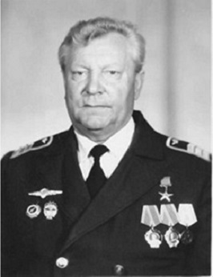

4. Николай Павлович Рябинин
Рябинин Николай Павлович – командир корабля Домодедовского производственного объединения Московского
транспортного управления гражданской авиации Министерства гражданской авиации СССР.
Родился 16 мая 1928 года в Сибирском (ныне – Красноярском) крае. Русский.
Окончил Бугурусланское летное училище гражданской авиации в Чкаловской (ныне – Оренбургской) области.
За время лётной работы освоил несколько типов пассажирских самолётов.
Продолжительное время работал в аэропорту Домодедово. Участник полётов турбовинтовых пассажирских самолётов
Ту-114 на сверхдальних трассах. За успехи в выполнении заданий семилетнего плана (1959-1965) по перевозкам пассажиров
воздушным транспортом, применении авиации в народном хозяйстве страны и освоении новой авиационной техники
награжден орденом Ленина. В конце летной эксплуатации Ту-114 в 1976 году командиром корабля Н.П. Рябининым,
в составе экипажа была произведена сложнейшая посадка на грунтовую полосу ограниченных размеров – 2100 метров
для нужд Криворожского авиационно-технического училища.
В дальнейшем являлся командиром корабля Ил-62 Домодедовского производственного
объединения Московского транспортного управления гражданской авиации Министерства гражданской авиации СССР..
Указом Президиума Верховного Совета СССР от 4 февраля 1983 года за выдающиеся производственные достижения, досрочное выполнение пятилетнего плана, освоение и внедрение новой авиационной техники и проявленную при этом трудовую доблесть Рябинину Николаю Павловичу присвоено звание Героя Социалистического Труда с вручением ордена Ленина и золотой медали «Серп и Молот».
После завершения лётной работы и выхода на пенсию жил в микрорайоне Авиационный города Домодедово Московской области. Принимал активное участие в общественной жизни..
Умер 11 января 2005 года. Похоронен в городе Домодедово Московской области на кладбище микрорайона Востряково.
Награждён 2 орденами Ленина (15.08.1966; 04.02.1983), медалями.
В микрорайоне Авиационный города Домодедово на доме, где с 1973 года проживал Н.П. Рябинин, установлена Мемориальная доска.
https://warheroes.ru/hero/hero.asp?Hero_id=25680